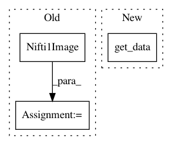

4d651b16bab2d31b8d0d172a285406195a3845bf,plot_canica_resting_state.py,,,#,28
Before Change
epi_img = nibabel.load(func_files[0])
mean_epi = epi_img.get_data().mean(axis=-1)
mean_epi_img = nibabel.Nifti1Image(mean_epi, epi_img.get_affine())
mean_epi = resample_img(mean_epi_img).get_data()
////// Apply CanICA ////////////////////////////////////////////////////////////////////////////////////////////////////////////////////////////
from nilearn.decomposition.canica import CanICA
After Change
////// Compute a mean epi ////////////////////////////////////////////////////////////////////////////////////////////////////////////////
from nilearn import image
mean_epi = image.mean_img(func_files[0]).get_data()
////// Apply CanICA ////////////////////////////////////////////////////////////////////////////////////////////////////////////////////////////
from nilearn.decomposition.canica import CanICA
In pattern: SUPERPATTERN
Frequency: 3
Non-data size: 3
Instances
Project Name: nilearn/nilearn
Commit Name: 4d651b16bab2d31b8d0d172a285406195a3845bf
Time: 2014-04-22
Author: gael.varoquaux@normalesup.org
File Name: plot_canica_resting_state.py
Class Name:
Method Name:
Project Name: nilearn/nilearn
Commit Name: a779bcd92e4978429799b3cacde20f5781e1ad3d
Time: 2013-05-31
Author: philippe.gervais@inria.fr
File Name: plot_haxby_searchlight.py
Class Name:
Method Name:
Project Name: nilearn/nilearn
Commit Name: 9223931ed397589ce58178461634313012e16e60
Time: 2014-02-17
Author: virgile.fritsch@gmail.com
File Name: plot_haxby_mass_univariate.py
Class Name:
Method Name: